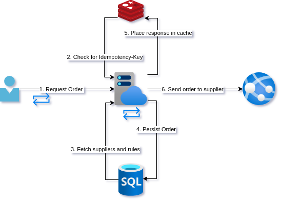

In the previous post we saw how you can end up with duplicates if using a retry-policy on a call to a non-idempotent endpoint. In this post, we will look at correcting this and see a subtle way that this can go wrong.
Posts in this series:
- Exploring reties, retry implications, and the failure modes they are appropriate for
- Using Idempotency-Key and a response cache
- The epic saga of client-side IDs and true idempotence
When we last saw our young developer, they had learned a lesson about the indiscriminate use of retry policy. This led to some insightful telemetry to be able to monitor when the system landed in an inconsistent state.
A good thing too! The e-commerce company our developer works at is expanding into another country and to cope with the increase in buying across 2 countries, they are automating the restocking. A sister team has been working with the data science team to develop an intelligent resupply service that will be making use of the supplier ordering API to automatically create orders. Currently, inconsistencies only happen once every week or two but with an increase in load, this will start getting even more annoying for both the development team and purchasers. Our young developer has raised that they want to have this fixed and stable before the automation kicks in.
As a reminder, this is the current design:

Let's see how our young developer is getting along...
That idempotence thing
So you stopped using XML and SOAP and started sending JSON so you figured you had this REST stuff down. If the last few weeks has taught you anything though it is that there is way more to this API design than the getting started pages on web frameworks tell you. You do recall this idea of idempotent calls though and this seems like what you are looking for. Searching for solutions, the internet seems to be a dumpster fire of people arguing about whether POST should be idempotent or not. Going to the source and reading the POST section of the RFC you decide on:
- Respond with
201 Createdif the resource does not exist - Respond with
303 See Otherif the resource already exists
So apparently a POST can be idempotent. Regardless of the spec, this just seems like a good idea.
The more difficult question is, how to tell if a request is a duplicate? Apparently, the semantic way to handle this would be to use Idempotency-Key.
The Idemptency-Key is a header you place in a request that indicates a unique request. So for each create order request you send to your API, it will have a unique UUID. Now you can retry a request if it fails, you can retry the request with the same Idemptency-Key as the failed request.
For the API our young developer comes up with the following design. The whole team is really excited about adding Redis to their stack as a cache. Not only will it be used as the Idemptency-Key cache but as a response cache in general.

Before servicing a request, the create order endpoint will check to see if the Idemptency-Key is already in the cache and if it is, it will just return the cached response. If it is not in the cache, it will proceed with the rest of the call and at the end, place the response in the cache.
Now that the endpoint is idempotent, you go ahead and re-enable that retry policy from the client-side.
Not again!
The day after deploying your new resiliency changes you get a call from one of the new stock purchasers, Leon. Leon is an older guy who wanted a change from warehousing, an area he had been working for decades. He mentions that he has noticed some inconsistencies but wants to check them with you since he does not know these new systems. You smile to yourself because Leon does not seem very comfortable on the computer. He double clicks everything and types with one finger. Leon brings up the application that shows the purchase orders created on our side. He also brings up the portal they use that shows them incoming deliveries from the supplier. It takes a while but eventually he puts these 2 screens next to each other. There are orders that have been created on our side and do not exist at the supplier. Not only that but duplicates are back!
Leon points out something else interesting. He noticed that his orders seem to be duplicated far more often than the other purchasers. He is worried he is doing something wrong since he knows he isn't great at this computer stuff.
You are pretty sure you know what is wrong and you can't believe you made this mistake again. You explain to Leon that he does not need to double click the button but assure him that the fault is not his but rather yours. Leon not only found a bug earlier than everyone else but because he had checked at the supplier, he was able to fix the orders before deliveries were sent. Thank you, Leon!
Quick fix
You are pretty sure you know what is going on. Leon's double-clicking meant that sometimes a second request was making it into the endpoint before the first call had been completed and was cached. Now that you are thinking through it, the current design hardly adds any value at all from a resilience point of view. You are shocked. Annoyed with yourself because the reason you had not looked at this more critically before was that this was the advice of countless posts and libraries on the internet. Maybe people just don't make POST requests idempotent? Or the people giving the advice don't work on distributed systems? Maybe they just don't have telemetry telling them how often this goes wrong? Looking at yours, it indeed confirms Leon's findings. Apparently, you need to invest in even better metrics and alerts.
You implement some quick fixes. Firstly, you disable the retry policy. Again. Next, you add a quick change to the UI that disables the button until a response is received. That should take care of Leon's double-clicking.
Back to the drawing board.
Analysis
So what went wrong with our friend's design this time? Basically, concurrency makes everything just a little bit more complex. When walking through a sequence of steps in our program it can be difficult to think about what this means for other executions happening at the same time. The kind of bugs that can arise from this can be rather subtle and confusing.
Here is just one example of 2 requests hitting the endpoint before the cache has been updated.

As you can see in the sequence diagram, the first request comes in and then the second. The second check against the cache happens before the first request completes and updates the cache.
We also still have the problem that a call to the supplier API failing would leave our database in an inconsistent state. Depending on what went wrong we could retry, but what if the process was terminated at that point? A duplicate call could come in again.
What if we updated the cache before the calls? Well then we could end up with either database or external API call failing and from the outside it seeming like it had succeeded.
Conclusion
This design of cache that is not transactional with state change within the service does not really move us closer to a resilient API design. In the next post, we will finally look at a design that does improve reliability.
Summary
Problem: Duplicate calls
Solutions: idempotency via a response cache
Consequence: Duplicate calls because cache update is not atomic
Concurrency is hard